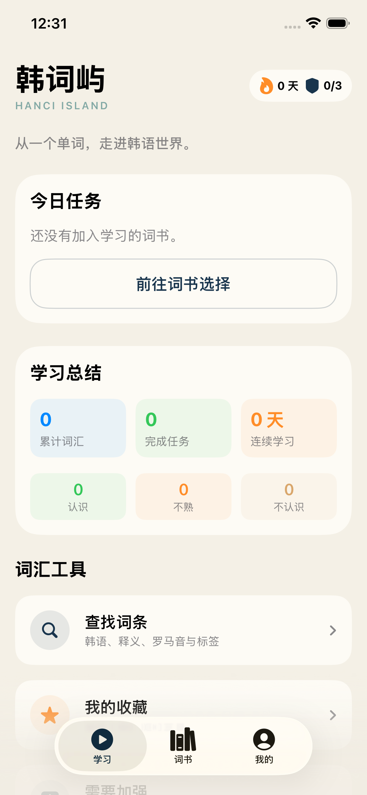

按词书计划学习
每本词书可以独立设置每日新词量或目标学习天数，当前目标与今日进度始终可见。
韩语词汇学习 · iOS
用清晰的学习计划、间隔复习与真实的完成反馈，把零散的韩语词汇连接成一座可以慢慢探索的岛。
iOS App 正在上架准备中 · 首发地区：中国大陆 · 首发版本面向已满14周岁的用户 · 当前不提供公开下载链接

韩词屿把词书、计划、答题反馈和复习节奏放在同一个清晰流程里。每一步都有明确状态，减少反复寻找和无效点击。
每本词书可以独立设置每日新词量或目标学习天数，当前目标与今日进度始终可见。
“认识、不熟、不认识”都会得到视觉、声音和触感反馈，并进入对应复习节奏。
完成页突出连续学习天数与今日新词进度，让每一次完成都对应真实记录。
学习流程围绕“理解、判断、巩固、再复习”展开，不用把记忆交给模糊的感觉。
按当前词书计划生成今日新词，先看词形，再主动回忆含义。
认识、不熟、不认识分别表达不同记忆状态，不会只靠单一按钮推进。
困难的词会在当天穿插重练，最终通过后才算完成当天的新词巩固。
根据反馈采用不同复习间隔，减少同时堆积的大量到期任务。
Privacy by design
当前版本没有开发者自有服务器账户，也未接入广告、分析、归因或追踪 SDK。Apple 登录是可选功能，学习数据不会自动同步到云端。
阅读隐私政策草稿HANCI ISLAND
韩词屿正在完成上架准备。首发版本面向已满14周岁的用户；这里暂时不提供 App Store 下载按钮，正式地址发布后才会补充真实链接。
浏览常见问题